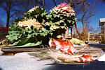

Home Page of Dr. Zibens Perkons
Dr. Zibens Perkons, M.D., Ph.D., DDT, COD, is the Research Director of the Institute for the Study of the Neurologically Typical Neurobiopsychoanalytic Research Laboratory
Current Research:
Pheromone of Social Delusion: Theory, Discovery and Primary Test Results.
Other Work by Dr. Zibens Perkons:
|

Aspie Fish
Frozen Theory of Mind
Cerebellar Abnormality/Ice and Snow
Cognition/Miscognition
Anterior Cyngulate Gyrus
Copyright © 1999 Perkons
|